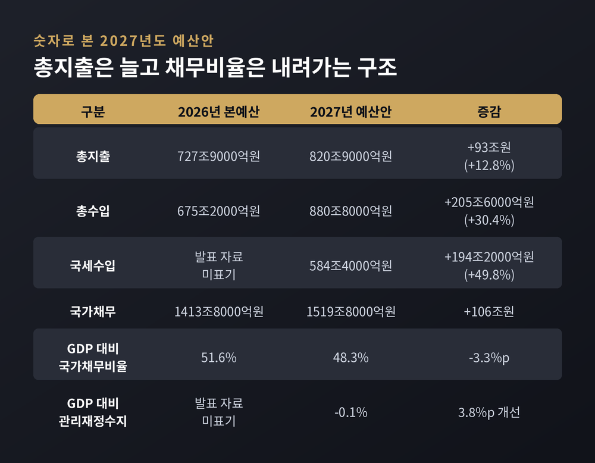
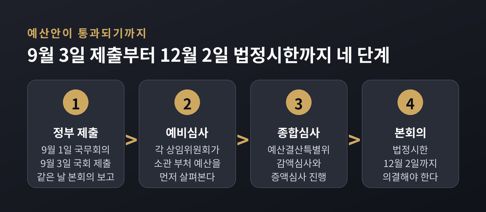
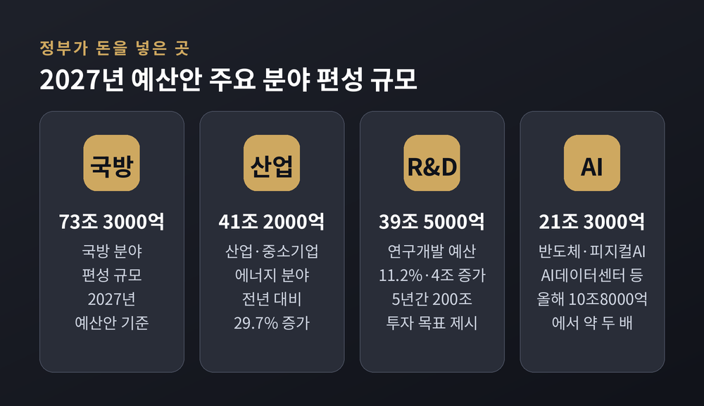
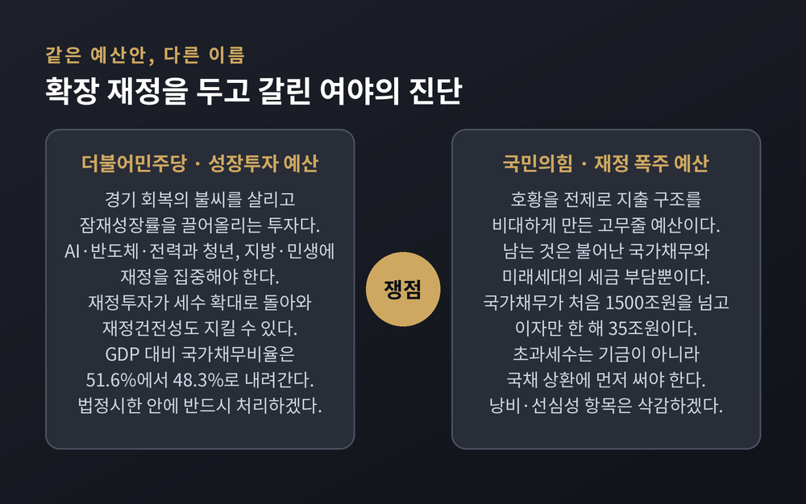
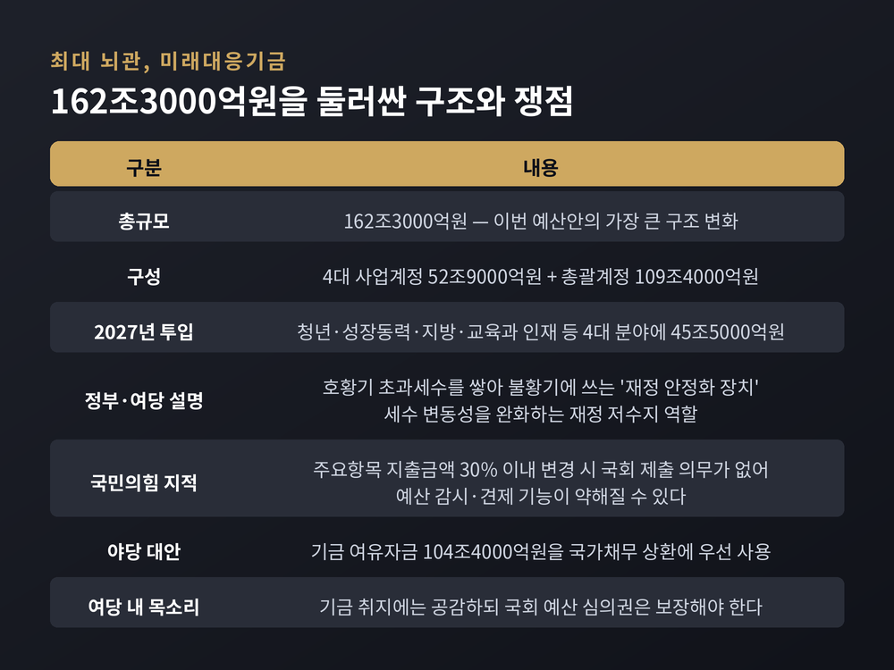

총지출 12.8% 증가와 162조 미래대응기금 — 90일 심사에서 여야가 부딪히는 지점
이번 글에서는 2026년 9월 문을 연 정기국회와 2027년도 예산안 심사 정국을 정리해 보겠습니다. 숫자가 크고 쟁점이 여러 갈래여서, 무엇이 사실이고 어디서 여야가 갈리는지 차분히 짚어보겠습니다. 어느 한쪽 편을 들지 않고 양쪽 주장을 나란히 옮기는 데 초점을 두었습니다.
세 줄 요약
국회는 2026년 9월 1일 오후 제439회 정기국회 제1차 본회의를 열었습니다. 개회식과 함께 100일 일정이 시작됐고, 회기는 12월 9일까지입니다.
같은 날 정부는 국무회의에서 두 건을 의결했습니다. 2027년도 예산안, 그리고 2026~2030년 국가재정운용계획입니다.
예산안이 실제로 국회 문턱을 넘어온 날은 9월 3일입니다. 정부가 이날 예산안을 제출했고, 국회는 같은 날 오후 본회의에서 이를 보고받았습니다.
조정식 국회의장은 개회사에서 협치를 강조했습니다. "국민의 살림살이를 결정하는 예산도, 국민의 삶을 바꾸는 법안도 모두 이번 정기국회에 달려 있다"며 이견이 있어도 민생을 위해 한 걸음씩 양보하자고 말했습니다.
여야도 9월 1일 민생정책연석회의를 출범시켰습니다. 대선·총선·지방선거에서 겹치는 공통 공약부터 먼저 처리하자는 취지입니다. 다만 쟁점 법안과 재정 운용 방향에서는 입장차가 그대로 남아 있습니다.
2027년도 예산안의 총지출은 820조9000억원입니다. 올해 본예산 727조9000억원보다 93조원, 비율로는 12.8% 늘었습니다.
두 가지 기록이 함께 세워졌습니다. 총지출이 800조원을 넘어선 것은 사상 처음이고, 12.8%라는 증가율은 글로벌 금융위기에 대응하던 2009년의 10.6%를 웃도는 역대 최고치입니다.
돈이 어디서 나오는지도 함께 봐야 합니다. 총수입은 880조8000억원으로 올해보다 205조6000억원(30.4%) 늘어날 것으로 잡혔습니다. 이 가운데 국세수입이 584조4000억원으로, 194조2000억원(49.8%) 증가합니다. 배경은 반도체 호황에 따른 법인세 증가이고, 소득세도 함께 올랐습니다.
지출보다 수입이 더 크게 늘다 보니 재정수지 지표는 오히려 좋아집니다. GDP 대비 관리재정수지는 -0.1%로, 전년 대비 3.8%포인트 개선됩니다. GDP 대비 국가채무비율도 올해 51.6%에서 내년 48.3%로 3.3%포인트 내려갑니다.
그렇다고 빚이 줄어드는 것은 아닙니다. 국가채무 총액은 1413조8000억원에서 1519조8000억원으로 106조원 늘어납니다. 비율은 내려가는데 절대 금액은 커지는 구조입니다. 이 대목이 뒤에서 볼 여야 공방의 출발점입니다.

첫째, 이재명 정부가 편성의 전 과정을 주관한 첫 본예산입니다. 정부가 그리는 재정 운용의 방향이 온전히 담긴 첫 문서인 셈입니다.
둘째, 한 해로 끝나는 이야기가 아닙니다. 함께 발표된 2026~2030년 국가재정운용계획을 보면 총지출은 2027년 820조9000억원, 2028년 894조6000억원, 2029년 957조4000억원을 거쳐 2030년 1005조2000억원에 이릅니다. 연평균 8.4%씩 늘어 총지출 1000조원 시대가 열리는 그림입니다.
국가채무도 같은 기간 1519조8000억원에서 1734조원까지 올라갑니다. 2030년 국채 이자비용은 53조원으로 전망됐습니다. 의무지출이 연평균 8.5%씩 늘면서 재정 경직성이 커진다는 지적도 함께 나옵니다.
셋째, 예산은 정치 일정과 맞물립니다. 9월 3일 본회의 보고부터 법정 처리 시한인 12월 2일까지 남은 기간은 90일입니다. 헌법은 정부가 회계연도 개시 120일 전까지 예산안을 제출하고, 국회는 30일 전까지 의결하도록 정하고 있습니다.
그런데 이 90일 안에 국정감사와 대정부질문, 인사청문회가 줄줄이 들어 있습니다. 실제로 예산에만 집중할 수 있는 시간은 이보다 훨씬 짧습니다.

분야별로는 국방에 73조3000억원이 배정됐습니다. 산업·중소기업·에너지는 41조2000억원으로 29.7% 늘었고, 연구개발(R&D)은 39조5000억원으로 11.2%(4조원) 증가해 역대 최대 규모가 됐습니다. 정부는 5년간 200조원 R&D 투자를 목표로 제시했습니다. 농림·수산·식품은 30조7000억원, 사회간접자본(SOC)은 28조9000억원입니다.
집중 투자 항목은 두 갈래로 요약됩니다.
하나는 인공지능입니다. 반도체와 피지컬AI, AI데이터센터(AIDC)를 묶은 3대 메가프로젝트를 포함한 AI 투자가 올해 10조8000억원에서 21조3000억원으로 거의 두 배가 됩니다.
다른 하나는 청년입니다. 성장단계별 청년 지원 예산이 28조2000억원에서 43조3000억원으로 53.5% 늘어납니다. 교육과 취업·창업에서 멈추지 않고 자산형성, 주거, 혼인·출산·양육까지 생애 전주기를 하나의 패키지로 묶겠다는 구상입니다. 금융위원회 소관 예산도 9조2417억원으로 98.7% 늘었는데, 서민금융 1조1000억원과 청년지원 2조1000억원이 여기 담겼습니다.

정부는 확장 재정과 함께 역대 최대 규모의 지출 구조조정을 병행한다고 밝혔습니다. 규모는 107조6000억원입니다.
내역은 두 덩어리입니다. 재량지출에서 38조6000억원, 의무지출에서 69조원입니다. 재량지출 쪽은 소규모·관행적 사업과 불요불급한 경상비, 저성과·중복 사업을 줄이는 방식입니다. 저성과·비효율 사업 2100여 개가 폐지 대상에 올랐습니다.
문제는 의무지출 69조원 쪽입니다. 여기에는 교육교부금 32조5000억원, 지방교부세 30조5000억원, 구직급여 1조4000억원 등이 포함됩니다. 기존 제도를 그대로 두었을 때와 비교한 절감 효과입니다.
특히 지방교육재정교부금은 산정 방식 자체가 55년 만에 바뀝니다. 내국세 수입에 자동으로 연동되던 구조를 손봐, 최근 10년 추세선을 웃도는 추가 세수는 미래대응기금으로 적립하는 방식입니다. 이 지점에서 교육계의 반발이 나왔습니다.
여야의 언어부터 다릅니다.
더불어민주당은 이번 예산안을 '성장투자 예산'으로 규정합니다. 경기 회복의 불씨를 살리고 AI·반도체·전력 같은 미래산업과 청년, 지방·민생에 재정을 집중해 잠재성장률을 끌어올려야 한다는 논리입니다. 과감한 재정투자가 결국 세수 확대로 돌아와 재정건전성도 지킬 수 있다는 것이 정부·여당의 설명입니다.
한병도 원내대표는 9월 1일 원내대책회의에서 "민생 회복의 속도를 높이고 대한민국의 더 나은 내일을 준비하기 위해 내년도 예산안을 법정 시한 안에 반드시 처리하겠다"고 밝혔습니다. 대화의 문은 열어두되 정쟁에는 물러서지 않겠다는 말도 덧붙였습니다. 천준호 원내운영수석부대표는 야당을 향해 "비판에 그치지 말고 대안을 내놓으라"고 했습니다.
여당은 국가채무가 106조원 늘어난다는 점만 부각된다고 봅니다. 경제 규모가 커지면서 GDP 대비 국가채무비율은 오히려 51.6%에서 48.3%로 내려간다는 것입니다.
국민의힘은 같은 예산안을 '재정 폭주 고무줄 예산'으로 규정합니다. 지금의 호황을 전제로 지출 구조를 비대하게 만들면, 남는 것은 불어난 국가채무와 미래세대의 세금 부담뿐이라는 주장입니다.
장동혁 대표는 9월 1일 사회관계망서비스에 예산 총지출이 사상 최대인 820조원을 넘겼고 160조원 규모의 미래대응기금까지 신설된다고 적었습니다. 추가경정예산까지 하면 정부가 실제로 쓰는 돈은 1000조원을 넘을 것이라고 했습니다. 국가채무가 처음으로 1500조원을 넘고 이자만 한 해 35조원인데 빚을 더 늘린다는 지적도 함께 내놨습니다.

이번 예산안에서 가장 큰 구조 변화는 미래대응기금 신설입니다. 규모는 162조3000억원입니다. 4대 사업계정에 52조9000억원, 총괄계정에 109조4000억원이 배분되고, 청년·성장동력·지방·교육과 인재 등 4대 분야 사업에는 내년 45조5000억원이 투입됩니다.
정부는 이 기금을 '재정 안정화 장치'로 설명합니다. 호황기에 들어온 초과세수를 쌓아 두었다가 불황기에 꺼내 쓰는 저수지 역할이라는 것입니다. 박홍근 의원은 8월 25일 이를 세수 변동성 완화 장치로 활용하겠다고 밝혔고, 여당은 '재정 댐'이라는 표현도 씁니다.
국민의힘은 다른 지점을 봅니다. 정부의 재량권이 커져 국회의 예산 감시·견제 기능이 약해지면 '정권의 쌈짓돈'이 될 수 있다는 우려입니다. 구체적으로는 주요항목 지출금액을 30% 이내에서 바꿀 때 기금운용계획 변경안을 국회에 내지 않아도 되는 구조가 문제로 지목됐습니다.
예산결산특별위원회 국민의힘 간사인 유상범 의원은 정부안이 제출되는 대로 개별사업의 문제점을 분석해 낭비 요소와 선심성 항목을 삭감하겠다고 예고했습니다. 대안도 함께 냈습니다. 국세수입이 194조2000억원이나 늘었는데 국가채무는 106조원 증가해 1519조8000억원이 됐다며, 미래대응기금의 여유자금 104조4000억원을 국가채무 상환에 우선 써야 한다는 주장입니다.
여기서 한 가지 짚어둘 점이 있습니다. 국회 통제 문제에 관해서는 여당 안에서도 심의권을 충분히 보장해야 한다는 주문이 나왔습니다. 기금 조성 취지에는 공감하되 견제 장치는 법으로 담보하자는 목소리입니다. 완전한 여야 대립 구도만은 아닌 셈입니다.

교육교부금은 여야 대립과는 결이 다른 갈등입니다. 정부와 교육 현장이 마주 선 사안입니다.
교육부는 각 시도교육청에 내려가는 교육교부금이 78조8718억원으로 올해 본예산보다 10.1%(7조2031억원) 늘어난다고 설명합니다. 학령인구 감소 등 달라진 여건을 반영해 산정 방식을 손보는 것이지, 총액을 깎는 것이 아니라는 취지입니다. 대학·인재양성에 5조원을 투입한다는 계획도 함께 내놨습니다.
대한민국교육감협의회는 실질 증가율을 3.2%로 봅니다. 산정 기준이 달라 같은 예산을 두고 숫자가 갈리는 상황입니다. 교육감들은 교육부 실무회의에도 불참했고, 개편에 반대하는 긴급행동은 국회 앞에서 무기한 천막농성에 들어갔습니다.
교육계의 논거는 이렇습니다. 학생 수가 준다고 교육재정 수요가 함께 주는 것은 아니라는 것입니다. 유보통합과 특수교육, 기초학력 보장, 돌봄·방과후학교, AI·디지털교육, 노후 학교시설 개선 같은 새로운 수요가 계속 생기고 있다는 설명입니다. 교부금 증가폭이 묶이면 교육청이 자율적으로 쓰는 돈은 줄고, 중앙정부가 미래대응기금으로 굴리는 교육재정은 넓어진다는 구조적 우려도 함께 제기됩니다.
여기에 정부가 함께 손질한 부동산 세제 개편안 등 세법 개정안도 남아 있습니다. 민주당은 정부안을 보완해 시장을 안정시키고 조세 형평성을 높이겠다는 입장이고, 국민의힘은 세 부담 증가와 시장 왜곡 가능성을 제기하고 있습니다.
절차는 정해져 있습니다. 각 상임위원회의 예비심사를 거쳐 예산결산특별위원회가 종합심사에 들어가고, 감액심사와 증액심사를 마친 뒤 본회의에서 의결합니다.
관건은 시한입니다. 예산안 자동부의 제도가 시행된 2014년 이후 법정시한을 지킨 해는 세 번뿐입니다. 2014년과 2020년, 그리고 지난해입니다. 그사이 2023년도 예산안은 22일, 2024년도 예산안은 19일, 2025년도 예산안은 8일 늦게 처리됐습니다.
예전엔 지각 처리가 거의 관행이었습니다. 지금은 지난해 5년 만에 시한을 지킨 경험이 생겼습니다. 2년 연속 시한 안에 합의를 만들어낼 수 있을지가 이번 정기국회의 한 가지 척도가 될 것입니다.
지켜볼 지점을 정리하면 세 가지입니다. 미래대응기금의 국회 통제 장치를 법에 어떻게 담느냐, 교육교부금 산정 방식 개편이 어느 선에서 조정되느냐, 그리고 상임위별 증액 요구가 몰리는 심사 후반에 충돌 수위가 어디까지 올라가느냐입니다.
한 가지 한계도 말씀드려야겠습니다. 예산 심사는 상임위와 소위, 예결위 소위를 거치며 대부분 비공개로 진행됩니다. 최종 수치가 나오기 전까지 바깥에서 확인할 수 있는 정보는 제한적입니다. 이 글의 내용도 9월 첫째 주까지 공개된 자료에 근거한 것입니다.
정리하면 이렇습니다.
820조9000억원이라는 숫자 자체보다, 그 돈이 어떤 절차로 감시받느냐가 이번 심사의 실질적인 쟁점입니다. 여야가 각각 '성장투자'와 '재정 폭주'라는 다른 이름을 붙였지만, 국회의 통제 장치를 어떻게 설계할지에서는 접점이 보이기도 합니다.
90일 뒤 국회가 어떤 숫자에 합의할지 지금은 알 수 없습니다. 다만 그 과정이 얼마나 공개적으로 진행되는지는 우리가 지금부터 지켜볼 수 있는 일입니다.
참고 소스